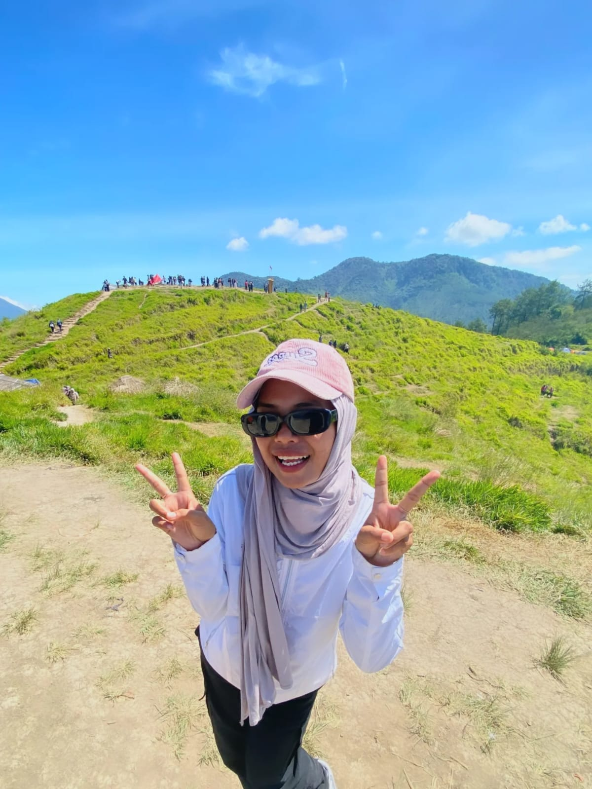

Saya merupakan salah satu mahasiswa aktif Program Studi Sistem Informasi, Institut Pendidikan Indonesia Garut (IPI Garut) yang mempunyai keinginan untuk mengembangkan dan menambah ilmu baru di bidang IT/Teknologi, dan juga mencari wawasan dan pengalaman baru untuk persiapan menghadapi dunia kerja nanti.
Pengembangan konsep antarmuka web untuk manajemen tim dan reservasi lapangan olahraga secara real-time.
Penelitian analisis website menggunakan metode WebQual 4.0 untuk mengukur kualitas layanan pada situs resmi Badan Pusat Statistik (BPS) Kabupaten Garut berdasarkan dimensi Usability, Information Quality, dan Service Interaction Quality guna mengetahui tingkat kepuasan pengguna.